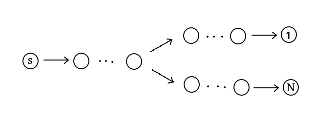
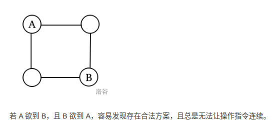

键入以搜索…
匹配算法：把输入按空格拆分，单独匹配每一段输入（不区分大小写，仅匹配文章文本内容），输出取或后的结果。
模糊搜索似乎很难搞，目前没有相关打算。
键入以搜索…
匹配算法：把输入按空格拆分，单独匹配每一段输入（不区分大小写，仅匹配文章文本内容），输出取或后的结果。
模糊搜索似乎很难搞，目前没有相关打算。
最短路为背景的题 + 做法是最短路的题
https://www.luogu.com.cn/problem/CF1473E
#include <bits/stdc++.h>
int main() {
#ifdef ONLINE_JUDGE
std::ios::sync_with_stdio(false);
std::cin.tie(nullptr), std::cout.tie(nullptr);
#else
std::freopen(".in", "r", stdin);
std::freopen(".out", "w", stdout);
const auto stime = std::chrono::steady_clock::now();
#endif
int n, m;
std::cin >> n >> m;
using arr = std::vector<long long>;
using brr = std::vector<arr>;
std::vector<std::vector<std::pair<int, int> > > g(n + 1);
std::vector<brr> dis(2, brr(2, arr(n + 1, 1e18))), vis(2, brr(2, arr(n + 1)));
for (int x, y, w; m--; ) {
std::cin >> x >> y >> w;
g[x].emplace_back(y, w);
g[y].emplace_back(x, w);
}
dis[0][0][1] = 0;
std::array<std::array<std::priority_queue<std::pair<long long, int> >, 2>, 2> q;
q[0][0].emplace(0, 1);
for (int i = 0; i < 2; ++i) {
for (int j = 0; j < 2; ++j) {
for (; !q[i][j].empty(); ) {
int f = q[i][j].top().second;
q[i][j].pop();
if (vis[i][j][f])
continue;
vis[i][j][f] = 1;
for (auto k : g[f]) {
if (dis[i][j][k.first] > dis[i][j][f] + k.second) {
dis[i][j][k.first] = dis[i][j][f] + k.second;
q[i][j].emplace(-dis[i][j][k.first], k.first);
}
if (!i && dis[1][j][k.first] > dis[i][j][f]) {
dis[1][j][k.first] = dis[i][j][f];
q[1][j].emplace(-dis[1][j][k.first], k.first);
}
if (!j && dis[i][1][k.first] > dis[i][j][f] + 2 * k.second) {
dis[i][1][k.first] = dis[i][j][f] + 2 * k.second;
q[i][1].emplace(-dis[i][1][k.first], k.first);
}
}
}
}
}
for (int i = 2; i <= n; ++i)
std::cout << std::min({ dis[0][0][i], dis[1][1][i] }) << ' ';
std::cout << '\n';
#ifndef ONLINE_JUDGE
std::cerr << std::fixed << std::setprecision(6) << std::chrono::duration<double> (std::chrono::steady_clock::now() - stime).count() << "s\n";
#endif
return 0;
}https://vjudge.net/contest/750645#problem/B
简化题目很重要的一个转化是由于 \(S\le T\) 带来的 \(S\) 和 \(T\) 地位平等，考虑把出发和到达分别看作一次事件处理。
按照所有事件的发生时刻排序，有：
#include <bits/stdc++.h>
int main() {
#ifdef ONLINE_JUDGE
std::ios::sync_with_stdio(false);
std::cin.tie(nullptr), std::cout.tie(nullptr);
#else
std::freopen(".in", "r", stdin);
std::freopen(".out", "w", stdout);
const auto stime = std::chrono::steady_clock::now();
#endif
int n, m;
std::cin >> n >> m;
std::vector<int> d(m + 1);
std::cin >> d[1];
struct event {
int t, op, id, x;
};
std::vector<event> a;
std::vector<int> mx(n + 1);
for (int i = 1, x, y, s, t; i <= m; ++i) {
std::cin >> x >> y >> s >> t;
a.push_back({ s, 0, i, x });
a.push_back({ t, 1, i, y });
}
std::sort(a.begin(), a.end(), [&](event &x, event &y) { return x.t == y.t ? x.op > y.op : x.t < y.t; });
for (auto [t, op, id, x] : a)
if (op == 1)
mx[x] = std::max(mx[x], t + d[id]);
else if (id != 1)
d[id] = std::max(mx[x] - t, 0);
for (int i = 2; i <= m; ++i)
std::cout << d[i] << ' ';
std::cout << '\n';
#ifndef ONLINE_JUDGE
std::cerr << std::fixed << std::setprecision(6) << std::chrono::duration<double> (std::chrono::steady_clock::now() - stime).count() << "s\n";
#endif
return 0;
}https://www.luogu.com.cn/problem/CF715B
神仙二分
如果初始把所有白边置为 \(1\)，那么会想到调整法构造
但是不知道应该在哪些边上调整，确定调整多少似乎也没有什么简单的做法
故平均用力，构造一个 边1 += 1，边2 += 1，边3 += 1, …, 边cnt0 += 1, 边1 += 1, 边2 += 1, … 的操作序列
容易发现每次操作最多让当前最短路长度增加 1，而且有单调性
故二分答案即可
#include <bits/stdc++.h>
const __int128 inf = 1e18;
const __int128 inff = 1e23;
int main() {
#ifdef ONLINE_JUDGE
std::ios::sync_with_stdio(false);
std::cin.tie(nullptr), std::cout.tie(nullptr);
#else
std::freopen(".in", "r", stdin);
std::freopen(".out", "w", stdout);
const auto stime = std::chrono::steady_clock::now();
#endif
int n, m, s, t, l, cnt = 0;
std::cin >> n >> m >> l >> s >> t, ++s, ++t;
std::vector<std::tuple<int, int, long long> > u(m + 1);
std::vector<std::vector<std::pair<int, long long> > > g(n + 1);
for (int i = 1, x, y; i <= m; ++i) {
long long w;
std::cin >> x >> y >> w, ++x, ++y;
if (w == 0)
w = -(++cnt);
g[x].emplace_back(y, w), g[y].emplace_back(x, w);
u[i] = { x, y, w };
}
std::vector<int> vis(n + 1);
std::vector<__int128> dis(n + 1);
std::vector<long long> k(cnt + 1);
__int128 res = -1;
auto check = [&](__int128 x) {
for (int i = 1; i <= cnt; ++i)
k[i] = x / cnt + (i <= x % cnt);
std::fill(vis.begin() + 1, vis.end(), 0);
std::fill(dis.begin() + 1, dis.end(), inf);
std::priority_queue<std::pair<__int128, int> > q;
dis[s] = 0, q.emplace(0, s);
for (; !q.empty(); ) {
int f = q.top().second;
q.pop();
if (vis[f])
continue;
vis[f] = 1;
for (auto [v, w] : g[f]) {
if (w < 0)
w = k[-w];
if (dis[v] > dis[f] + w) {
dis[v] = dis[f] + w;
q.emplace(-dis[v], v);
}
}
}
return dis[t] <= l;
};
for (__int128 l = cnt, r = cnt * inf, mid; l <= r; ) {
mid = (l + r) >> 1;
if (check(mid))
res = mid, l = mid + 1;
else
r = mid - 1;
}
if (res == -1)
std::cout << "NO\n";
else {
check(res);
if (dis[t] != l)
std::cout << "NO\n";
else {
std::cout << "YES\n";
for (int i = 1; i <= m; ++i) {
auto [x, y, w] = u[i];
if (w < 0)
w = k[-w];
std::cout << x - 1 << ' ' << y - 1 << ' ' << w << '\n';
}
}
}
#ifndef ONLINE_JUDGE
std::cerr << std::fixed << std::setprecision(6) << std::chrono::duration<double> (std::chrono::steady_clock::now() - stime).count() << "s\n";
#endif
return 0;
}https://www.luogu.com.cn/problem/P7473
\(m\) 相对很小，看看有没有什么基于 \(m\) 的做法
每次球停下的位置一定是某个障碍物（或边界）上 / 下 / 左 / 右的格子，故可以在这 \(O(n + m)\) 个点上建图
怎么同时维护两个球的信息呢，发现 \(m\) 还是很小，所以可以把两个球塞一起作为一个状态
\(m^2\) 次 Dij 还是太激进了 进一步思考发现可能的终点共 \(m\) 个 并且彼此不区分
故以这 \(m\) 个终点跑多源最短路即可
但 5e6 跑 Dij 还是太勉强了。发现边权为 1，为什么不 BFS 呢 😅
发现起点可能不在我们限定的点上，但可以人为选择一次重力方向，然后就回到刚刚的问题了
或者离线也是一种方法
疑似常数太大，拼尽全力勉强卡过
#include <bits/stdc++.h>
const int LEN = (1 << 20);
#ifdef ONLINE_JUDGE
inline int nec(void) {
static char buf[LEN], *p = buf, *e = buf;
if (p == e) {
e = buf + fread(buf, 1, LEN, stdin);
if (e == buf)
return EOF;
p = buf;
}
return *p++;
}
#else
#define nec getchar
#endif
inline bool read(int &x) {
x = 0;
bool f = 0;
char ch = nec();
while (ch < '0' || ch > '9') {
if (ch == EOF)
return 0;
if (ch == '-')
f = 1;
ch = nec();
}
while (ch >= '0' && ch <= '9') {
x = x * 10 + ch - '0';
ch = nec();
}
if (f)
x = -x;
return 1;
}
void print(int x) {
if (x < 0) {
putchar('-');
x = -x;
}
if (x >= 10)
print(x / 10);
putchar(x % 10 + '0');
return;
}
void print(int x, char ch) {
print(x);
putchar(ch);
return;
}
const int inf = 0x3f3f3f3f;
const int dir[][2] = <!--swig0-->;
int main() {
#ifdef ONLINE_JUDGE
std::ios::sync_with_stdio(false);
std::cin.tie(nullptr), std::cout.tie(nullptr);
#else
std::freopen(".in", "r", stdin);
std::freopen(".out", "w", stdout);
const auto stime = std::chrono::steady_clock::now();
#endif
int n, m, q;
read(n), read(m), read(q);
std::vector<std::pair<int, int> > pos(m + 1);
std::vector<std::vector<int> > a(n + 1, std::vector<int> (n + 1));
for (int i = 1, x, y; i <= m; ++i) {
read(x), read(y);
pos[i] = { x, y }, a[x][y] = -1;
}
for (int i = 1; i <= n; ++i)
pos.emplace_back(0, i), ++m;
for (int i = 1; i <= n; ++i)
pos.emplace_back(i, n + 1), ++m;
for (int i = 1; i <= n; ++i)
pos.emplace_back(n + 1, i), ++m;
for (int i = 1; i <= n; ++i)
pos.emplace_back(i, 0), ++m;
int cnt = 0;
std::vector<std::pair<int, int> > u(1);
for (int i = 1; i <= m; ++i)
for (auto [fx, fy] : dir) {
int nx = pos[i].first + fx, ny = pos[i].second + fy;
if (nx >= 1 && nx <= n && ny >= 1 && ny <= n && !a[nx][ny])
a[nx][ny] = ++cnt, u.emplace_back(nx, ny);
}
std::vector<std::vector<std::array<int, 4> > > top(n + 1, std::vector<std::array<int, 4> > (n + 1));
for (int j = 1; j <= n; ++j) {
for (int i = 1; i <= n; ++i)
if (a[i][j] != -1) {
if (i == 1 || a[i - 1][j] == -1)
top[i][j][0] = a[i][j];
else
top[i][j][0] = top[i - 1][j][0];
}
for (int i = n; i; --i)
if (a[i][j] != -1) {
if (i == n || a[i + 1][j] == -1)
top[i][j][1] = a[i][j];
else
top[i][j][1] = top[i + 1][j][1];
}
}
for (int i = 1; i <= n; ++i) {
for (int j = 1; j <= n; ++j)
if (a[i][j] != -1) {
if (j == 1 || a[i][j - 1] == -1)
top[i][j][2] = a[i][j];
else
top[i][j][2] = top[i][j - 1][2];
}
for (int j = n; j; --j)
if (a[i][j] != -1) {
if (j == n || a[i][j + 1] == -1)
top[i][j][3] = a[i][j];
else
top[i][j][3] = top[i][j + 1][3];
}
}
const int N = cnt * cnt;
std::vector<std::vector<int> > g(N + 1);
auto encode = [&](int x, int y) {
return (x - 1) * cnt + y;
};
auto decode = [&](int id) {
return std::make_pair((id - 1) / cnt + 1, (id - 1) % cnt + 1);
};
for (int i = 1; i <= N; ++i)
for (int j = 0; j < 4; ++j) {
auto [a, b] = decode(i);
g[encode(top[u[a].first][u[a].second][j], top[u[b].first][u[b].second][j])].emplace_back(i);
}
std::vector<int> dis(N + 1, inf), vis(N + 1);
{
std::queue<int> q;
for (int i = 1; i <= cnt; ++i)
dis[encode(i, i)] = 0, q.push(encode(i, i)), vis[encode(i, i)] = 1;
for (; !q.empty(); ) {
int x = q.front();
q.pop();
for (auto i : g[x])
if (!vis[i])
dis[i] = dis[x] + 1, vis[i] = 1, q.push(i);
}
}
for (int a, b, c, d; q--; ) {
read(a), read(b), read(c), read(d);
if (a == c && b == d)
print(0, '\n');
else {
int res = inf;
for (int j = 0; j < 4; ++j)
res = std::min(res, dis[encode(top[a][b][j], top[c][d][j])] + 1);
if (res == inf)
print(-1, '\n');
else
print(res, '\n');
}
}
#ifndef ONLINE_JUDGE
std::cerr << std::fixed << std::setprecision(6) << std::chrono::duration<double> (std::chrono::steady_clock::now() - stime).count() << "s\n";
#endif
return 0;
}https://www.luogu.com.cn/problem/P7515
把问题形式化一下，现在有 \(n\times m\) 个未知数和 \((n-1)\times (m-1)\) 个方程
那么可以对边上一圈任意赋值，限制是左上角这 \((n-1)\times (m-1)\) 个未知数必须落在 \([0,10^6]\) 上
有一个很容易观察到的性质，对于一个 \(a\)，选取一个 \(v\)，并把棋盘黑白染色，那么把所有黑格 \(+=v\)，白格 \(-=v\)，对应的 \(b\) 是不会变的。
这个操作是涉及全局的，太苛刻了，有没有什么更 mild 的构造？
发现只对一行 / 列黑白染色并操作也可以得到相同的结果。能感受到操作无法再简化了。考虑用这个版本的操作调整。
故大力令周围一圈的临时解 \(a'\) 为 \(0\)，令每行、列的调整 delta 为 \(r_i,c_i\)，可以得到若干个关于 \(0\) 和 \(10^6\) 的约束。最后建出来一个完全二分图状物，跑差分约束即可，容易发现复杂度正确。
实现技巧：规划一下 \(r\) 和 \(c\) 的染色方式，使得它们错开，可以把所有位置都写作 \(a'_{i,j}+c-r\) 或 \(a'_{i,j}+r-c\) 的形式，便于差分约束
https://www.luogu.com.cn/problem/P6822
#include <bits/stdc++.h>
const long long inf = 1e18;
int main() {
#ifdef ONLINE_JUDGE
std::ios::sync_with_stdio(false);
std::cin.tie(nullptr), std::cout.tie(nullptr);
#else
std::freopen(".in", "r", stdin);
std::freopen(".out", "w", stdout);
const auto stime = std::chrono::steady_clock::now();
#endif
int n, m;
std::cin >> n >> m;
struct edge { int v, w, id, pi, si; };
std::vector<std::vector<edge> > g1(n + 2);
std::vector<std::vector<std::pair<int, int> > > g(1);
int cnt = 0;
for (int x, y, w; m--; ) {
std::cin >> x >> y >> w;
g1[x].push_back({ y, w, ++cnt, 0, 0 });
g1[y].push_back({ x, w, ++cnt, 0, 0 });
g.emplace_back(), g.emplace_back();
}
int s = ++cnt, t = ++cnt;
g1[0].push_back({ 1, 0, s, 0, 0 }), g1[n].push_back({ n + 1, 0, t, 0, 0 });
g.emplace_back(), g.emplace_back();
for (int i = 0; i <= n + 1; ++i)
if (!g1[i].empty()) {
std::sort(g1[i].begin(), g1[i].end(), [&](edge &x, edge &y) { return x.w < y.w; });
for (int j = 0; j < (int)g1[i].size(); ++j) {
g1[i][j].pi = ++cnt, g.emplace_back();
if (j != 0)
g[cnt].emplace_back(cnt - 1, 0);
g[cnt].emplace_back(g1[i][j].id, 0);
}
for (int j = (int)g1[i].size() - 1; ~j; --j) {
g1[i][j].si = ++cnt, g.emplace_back();
if (j != (int)g1[i].size() - 1)
g[cnt].emplace_back(cnt - 1, 0);
g[cnt].emplace_back(g1[i][j].id, g1[i][j].w);
}
}
for (int i = 0; i <= n + 1; ++i)
for (auto &[v, w, id, pi, si] : g1[i]) {
auto to = std::upper_bound(g1[v].begin(), g1[v].end(), w, [&](int x, edge &y) { return x < y.w; });
if (to != g1[v].end())
g[id].emplace_back(to->si, 0);
if (to != g1[v].begin())
g[id].emplace_back((--to)->pi, w);
}
std::vector<int> vis(cnt + 1, 0);
std::vector<long long> dis(cnt + 1, inf);
std::priority_queue<std::pair<long long, int> > q;
dis[s] = 0, q.emplace(0, s);
for (; !q.empty(); ) {
int f = q.top().second;
q.pop();
if (vis[f])
continue;
vis[f] = 1;
for (auto [v, w] : g[f])
if (dis[v] > dis[f] + w) {
dis[v] = dis[f] + w;
q.emplace(-dis[v], v);
}
}
std::cout << dis[t] << '\n';
#ifndef ONLINE_JUDGE
std::cerr << std::fixed << std::setprecision(6) << std::chrono::duration<double> (std::chrono::steady_clock::now() - stime).count() << "s\n";
#endif
return 0;
}https://www.luogu.com.cn/problem/CF685E
目前见过的数据范围提示性极弱（误导性极强）的循环结构题：
正赛因为有部分分，应该不会出现不敢写的问题
考虑离线询问，逆序加边；原文无边权；边的通行时刻只决定到达点的时刻。
借鉴 merchant 中的思路，只需要更新当前边两侧点为起点的 DP 数组。
需要注意边从某种意义上说是『有向』的。
#include <bits/stdc++.h>
const int inf = 0x3f3f3f3f;
int main() {
#ifdef ONLINE_JUDGE
std::ios::sync_with_stdio(false);
std::cin.tie(nullptr), std::cout.tie(nullptr);
#else
std::freopen(".in", "r", stdin);
std::freopen(".out", "w", stdout);
const auto stime = std::chrono::steady_clock::now();
#endif
int n, m, q;
std::cin >> n >> m >> q;
struct query { int r, s, t, id; };
std::vector<int> res(q + 1);
std::vector<std::vector<query> > u(m + 1);
std::vector<std::pair<int, int> > e(m + 1);
for (int i = 1; i <= m; ++i)
std::cin >> e[i].first >> e[i].second;
for (int i = 1, l, r, s, t; i <= q; ++i) {
std::cin >> l >> r >> s >> t;
u[l].push_back({ r, s, t, i });
}
std::vector<std::vector<int> > g(n + 1, std::vector<int> (n + 1, inf));
for (int i = m; i; --i) {
auto [x, y] = e[i];
g[x][y] = g[y][x] = i;
for (int j = 1; j <= n; ++j)
g[x][j] = g[y][j] = std::min(g[x][j], g[y][j]);
for (auto [r, s, t, id] : u[i])
if (g[s][t] <= r)
res[id] = 1;
}
for (int i = 1; i <= q; ++i)
std::cout << (res[i] ? "Yes" : "No") << '\n';
#ifndef ONLINE_JUDGE
std::cerr << std::fixed << std::setprecision(6) << std::chrono::duration<double> (std::chrono::steady_clock::now() - stime).count() << "s\n";
#endif
return 0;
}https://www.luogu.com.cn/problem/CF1197E
先按 \(out\) 排序，做一个前缀优化建图。
容易发现除了最外层，每一个套娃都会提供 \(in_i-out_i\) 的代价，而最外层会提供 \(in_x\) 的代价。
好在要求的是最长路，这样就可以 Dij
了，并不需要真正把图建出来，发现这个形式更序列，直接在序列上二分前缀
+ DP 即可。
求方案是容易的。最后统计 DP 值最大，且不能被其他套娃包含的元素即可。
Tip：在求解过程中并不用考虑当前元素和前缀 min 元素间能否加入其他套娃，因为保证 \(out>in\)，如果存在这样的套娃，其 DP 值会比前缀 min 更小，矛盾。
#include <bits/stdc++.h>
const int mod = 1e9 + 7;
int main() {
#ifdef ONLINE_JUDGE
std::ios::sync_with_stdio(false);
std::cin.tie(nullptr), std::cout.tie(nullptr);
#else
std::freopen(".in", "r", stdin);
std::freopen(".out", "w", stdout);
const auto stime = std::chrono::steady_clock::now();
#endif
int n;
std::cin >> n;
std::vector<std::pair<int, int> > a(n + 1);
int mxi = 0;
for (int i = 1; i <= n; ++i) {
std::cin >> a[i].first >> a[i].second;
mxi = std::max(mxi, a[i].second);
}
std::sort(a.begin() + 1, a.end());
std::vector<long long> g(n + 1), mxg(n + 1), f(n + 1), mx(n + 1);
for (int i = 1; i <= n; ++i) {
int j = std::upper_bound(a.begin() + 1, a.begin() + i, std::make_pair(a[i].second, 0x3f3f3f3f)) - a.begin() - 1;
if (j == 0)
f[i] = a[i].second, g[i] = 1ll;
else
f[i] = mx[j] + a[i].second, g[i] = mxg[j];
long long now = f[i] - a[i].first;
if (now < mx[i - 1])
mx[i] = now, mxg[i] = g[i];
else if (now == mx[i - 1])
mx[i] = now, mxg[i] = (mxg[i - 1] + g[i]) % mod;
else
mx[i] = mx[i - 1], mxg[i] = mxg[i - 1];
}
auto now = 0x3f3f3f3fll, res = 0ll;
for (int i = 1; i <= n; ++i) {
if (a[i].first <= mxi)
continue;
if (f[i] < now)
now = f[i], res = g[i];
else if (f[i] == now)
(res += g[i]) %= mod;
}
std::cout << res << '\n';
#ifndef ONLINE_JUDGE
std::cerr << std::fixed << std::setprecision(6) << std::chrono::duration<double> (std::chrono::steady_clock::now() - stime).count() << "s\n";
#endif
return 0;
}https://www.luogu.com.cn/problem/P6233
https://www.luogu.com.cn/problem/P6096
考虑做一个神秘拆点，把每个点附上线路和运行方向的信息（所以是单向的）
认为路径代价是二元组，那么同条线路中的点通行代价为 \((0,-1)\)
换乘需要优化建图，每个点可以花 \((0,0)\) 的代价走到这个点的『换乘点』，再花 \((1,0)\) 的代价走到另一个分点
但 15 年的时候 SPFA 已经死了，所以需要好好考虑怎么实现最短路。
分两问是有提示性在的，可以想到 01 BFS 解决第一个关键字，比较对的想法是把所有最短路拿出来形成 DAG，在 DAG 上对第二关键字 DP。
#include <bits/stdc++.h>
int main() {
#ifdef ONLINE_JUDGE
std::ios::sync_with_stdio(false);
std::cin.tie(nullptr), std::cout.tie(nullptr);
#else
std::freopen(".in", "r", stdin);
std::freopen(".out", "w", stdout);
const auto stime = std::chrono::steady_clock::now();
#endif
int n, m;
std::cin >> m >> n;
std::unordered_map<std::string, int> tab;
std::vector<std::vector<int> > l(n + 1);
std::vector<std::vector<std::tuple<int, int, int> > > g0(n + 1), g1(n + 1);
for (int i = 1; i <= n; ++i) {
std::string s;
std::cin >> s, tab[s] = i;
}
int tot = n;
for (int i = 1, k; i <= m; ++i) {
std::cin >> k;
int lp = 0, lq = 0;
for (std::string s; k--; ) {
std::cin >> s;
int p = ++tot, q = ++tot, id = tab[s];
g0.emplace_back(), g0.emplace_back();
g1.emplace_back(), g1.emplace_back();
if (lp) {
g0[p].emplace_back(lp, 0, 1), g0[lq].emplace_back(q, 0, 1);
g1[lp].emplace_back(p, 0, 1), g1[q].emplace_back(lq, 0, 1);
}
g0[p].emplace_back(id, 0, 0), g0[id].emplace_back(p, 1, 0);
g1[id].emplace_back(p, 0, 0), g1[p].emplace_back(id, 1, 0);
g0[q].emplace_back(id, 0, 0), g0[id].emplace_back(q, 1, 0);
g1[id].emplace_back(q, 0, 0), g1[q].emplace_back(id, 1, 0);
l[id].push_back(p), l[id].push_back(q);
lp = p, lq = q;
}
}
int s, t;
{
std::string s1, s2;
std::cin >> s1 >> s2;
s = ++tot, t = tab[s2];
g0.emplace_back(), g1.emplace_back();
int p = tab[s1];
for (auto i : l[p])
g0[s].emplace_back(i, 1, 0), g1[i].emplace_back(s, 1, 0);
}
std::vector<int> dis0(tot + 1, 0x3f3f3f3f), dis1(tot + 1, 0x3f3f3f3f);
auto BFS = [&](decltype(g0) &g, decltype(dis0) &dis, int s) {
std::deque<int> q;
std::vector<int> vis(tot + 1);
q.push_back(s), dis[s] = 0;
for (; !q.empty(); ) {
int x = q.front();
q.pop_front();
if (vis[x])
continue;
vis[x] = 1;
for (auto [v, w1, w2] : g[x])
if (dis[x] + w1 < dis[v]) {
dis[v] = dis[x] + w1;
if (w1 == 0)
q.push_front(v);
else
q.push_back(v);
}
}
return;
};
BFS(g0, dis0, s), BFS(g1, dis1, t);
std::cout << dis0[t] << '\n';
std::vector<int> deg(tot + 1);
std::vector<std::vector<std::pair<int, int> > > g(tot + 1);
for (int i = 1; i <= tot; ++i)
for (auto [j, w1, w2] : g0[i])
if (dis0[i] + dis1[j] + w1 == dis0[t])
g[i].emplace_back(j, w2), ++deg[j];
std::queue<int> q;
for (int i = 1; i <= tot; ++i)
if (!deg[i])
q.push(i);
std::vector<int> f(tot + 1);
for (; !q.empty(); ) {
int x = q.front();
q.pop();
for (auto [v, w] : g[x]) {
f[v] = std::max(f[v], f[x] + w);
if (!--deg[v])
q.push(v);
}
}
std::cout << f[t] << '\n';
#ifndef ONLINE_JUDGE
std::cerr << std::fixed << std::setprecision(6) << std::chrono::duration<double> (std::chrono::steady_clock::now() - stime).count() << "s\n";
#endif
return 0;
}https://www.luogu.com.cn/problem/P9402
https://www.luogu.com.cn/problem/P7984
没什么好说的线段树优化建图，难点在于如何同时获取 \(1\) 和 \(N\) 的信息
发现从某个点走到 \(1\) 和 \(N\)，有一种不劣的走法：

维护一下每个点单独走到 \(1\)，\(N\) 的最小代价和同时走到 \(1,N\) 的最小代价
看到一种更加对的写法是令 \(f_u\) 表示 \(v\) 的答案，那么可以用 \(f_v+w(u,v)\) 更新 \(f_u\)。
那么可以从 \(1,N\) 出发做一个 Dij。代码略。
https://www.luogu.com.cn/problem/P9520
注意要走简单路径，也就是说不存在绕路让道的可能性。容易推出：若输入合法，总能找到一种方式使得每个人受到的指令是连续给出的。
P.S. 这个结论挪到图上就不成立了，很容易举出反例。

若一个人的起点 / 终点在另一个人的路径上，那么这两个人之间存在先后关系。建图后检查是否为 DAG 即可。
但建图显然是比较困难的，容易构造出数据使得边数来到 \(n^2\) 级别。考虑优化建图。
发现可以用一个树剖 / 倍增的结构来建图。
Tips：这一点同样是一个树上路径问题。参见 树上问题，倍增和树剖的选择？
这里的路径要求两端都是开的，这就导致倍增写着很困难（虽然树剖可能也是），不排除我写丑了
#include <bits/stdc++.h>
const int K = 19;
int main() {
#ifdef ONLINE_JUDGE
std::ios::sync_with_stdio(false);
std::cin.tie(nullptr), std::cout.tie(nullptr);
#else
std::freopen("01-02.in", "r", stdin);
std::freopen(".out", "w", stdout);
const auto stime = std::chrono::steady_clock::now();
#endif
int T;
for (std::cin >> T; T--; ) {
int n, m;
std::cin >> n;
std::vector<std::vector<int> > g1(n + 1);
std::vector<int> s(n + 1), t(n + 1);
for (int i = 1, x, y; i < n; ++i) {
std::cin >> x >> y;
g1[x].push_back(y), g1[y].push_back(x);
}
std::cin >> m;
std::vector<std::vector<int> > g(m + 1);
std::vector<std::pair<int, int> > a(m + 1);
for (int i = 1; i <= m; ++i) {
std::cin >> a[i].first >> a[i].second;
s[a[i].first] = i;
t[a[i].second] = i;
}
int cnt = m;
struct node { int fa, i0, i1; };
std::vector<std::array<node, K + 1> > p(n + 1);
std::vector<int> i0(n + 1), i1(n + 1), dep(n + 1), deg(m + 1);
auto init = [&](void) {
g.emplace_back(), deg.emplace_back();
return ++cnt;
};
auto add = [&](int x, int y) {
g[x].push_back(y), ++deg[y];
return;
};
for (int i = 1; i <= n; ++i)
i0[i] = init(), i1[i] = init();
std::function<void(int, int)> DFS = [&](int x, int fa) {
if (s[x])
add(s[x], i1[x]);
if (t[x])
add(i0[x], t[x]);
for (auto i : g1[x])
if (i != fa) {
dep[i] = dep[x] + 1;
p[i][0].fa = x;
p[i][0].i0 = init(), p[i][0].i1 = init();
add(p[i][0].i0, i0[i]), add(i1[i], p[i][0].i1);
for (int j = 1; j <= K; ++j) {
p[i][j].fa = p[p[i][j - 1].fa][j - 1].fa;
if (!p[i][j].fa)
break;
p[i][j].i0 = init(), p[i][j].i1 = init();
add(p[i][j].i0, p[i][j - 1].i0);
add(p[i][j].i0, p[p[i][j - 1].fa][j - 1].i0);
add(p[i][j - 1].i1, p[i][j].i1);
add(p[p[i][j - 1].fa][j - 1].i1, p[i][j].i1);
}
DFS(i, x);
}
return;
};
dep[1] = 1, DFS(1, -1);
for (int i = 1; i <= m; ++i) {
auto [x, y] = a[i];
if (x == y)
continue;
if (t[x])
add(i, t[x]);
if (s[y])
add(s[y], i);
if (dep[x] < dep[y])
std::swap(x, y);
x = p[x][0].fa;
if (dep[x] >= dep[y]) {
for (int j = K; ~j; --j)
if (dep[p[x][j].fa] >= dep[y]) {
add(i, p[x][j].i0), add(p[x][j].i1, i);
x = p[x][j].fa;
}
if (x == y)
continue;
add(i, p[x][0].i0), add(p[x][0].i1, i);
x = p[x][0].fa;
}
y = p[y][0].fa;
if (x != y) {
for (int j = K; ~j; --j)
if (p[x][j].fa != p[y][j].fa) {
add(i, p[x][j].i0), add(i, p[y][j].i0);
add(p[x][j].i1, i), add(p[y][j].i1, i);
x = p[x][j].fa, y = p[y][j].fa;
}
add(i, p[x][0].i0), add(i, p[y][0].i0);
add(p[x][0].i1, i), add(p[y][0].i1, i);
x = p[x][0].fa;
}
add(i, i0[x]), add(i1[x], i);
}
std::queue<int> q;
for (int i = 1; i <= cnt; ++i)
if (!deg[i])
q.push(i);
int tot = 0;
for (; !q.empty(); ) {
int x = q.front();
q.pop(), ++tot;
for (auto i : g[x])
if (!--deg[i])
q.push(i);
}
std::cout << (tot == cnt ? "Yes" : "No") << '\n';
}
#ifndef ONLINE_JUDGE
std::cerr << std::fixed << std::setprecision(6) << std::chrono::duration<double> (std::chrono::steady_clock::now() - stime).count() << "s\n";
#endif
return 0;
}